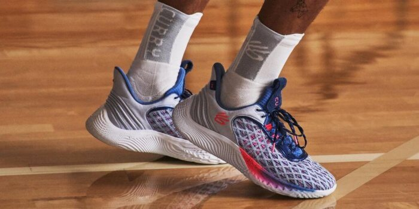

UNDER ARMOR CURRY Finding your next pair of performance basketball shoes is tough! Just in the last few years, Converse, New Balance, and a bunch of Chinese brands have entered an already crowded market dominated by Nike, Adidas, and Jordan Brand. With so many brands to choose from, in our experience, picking the right shoes is tough! On thehoopsgeek.com we collect and summarize professional sneaker reviews from Youtube channels and blogs to create an always up-to-date list of the most popular basketball shoes. So far, we have watched or read 2085 reviews of 385 different shoes to create the most comprehensive performance basketball shoe database on the web. We are also collecting ratings and reviews from users detailing their own experiences to create a user score, separate from the expert rating. Below you can see the 33 best-reviewed basketball shoes currently on the market!